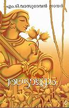
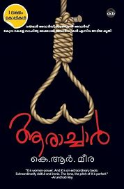

AADUJEEVITHAM

AUTHOR:BENYAMIN
Benyamin's 'Aadujeevitham' (Life of Goat)is one such book which is full of life which spill tears from our eyes; which will fill our minds with thoughts, help us to appreciate the conditions we live in and look at life on a positive note. More than this, the book will raise the humanity in an individual to sympathise to a fellow human's suffering.
THE ALCHEMIST

WRITER:PAULO COELHO
The Alchemist summary plot is set in Andalusia, in Spain. It is about the journey of Santiago, an Andalusian shepherd boy. He sees the same dream every night in which a child says that he will find treasure at the Egyptian pyramids. He starts his journey in the search of treasure.
RANDAMOOZHAM

WRITER:MT VASUDEVAN NAIR
Randamoozham is the retelling of the Mahabharata from the second Pandava, Bhima’s perspective. Written in Malayalam by MT Vasudevan Nair, the book has been translated into English and is currently being made into a Movie starring Mohanlal. Revisionism is not a popular style when it comes to Indian Literature.
PRIDE AND PREJUDICE

WRITER:JANE AUSTEN
Jane Austen's Pride and Prejudice centers on the conflict between marrying for love and marrying for economic reasons. None of Mr. Bennet's five daughters can inherit his estate, so they are pressured into finding security in "good" marriages.
AARACHAR

WRITER:K.R.MEERA
Aarachaar (Executioner) is a story based on the Indian culture of caste and religion. Set in Bengal, it tells the story of a family of executioners with a long lineage, beginning in the fourth century BC. The protagonist of the novel, Chetna, is a strong and tenacious woman who struggles to inherit this profession.